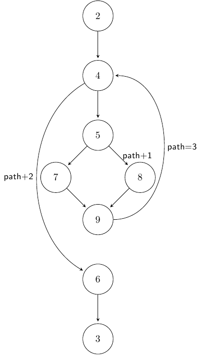

| ← Prev | Next → |
Traced information is stored in stack-local and global variables of the running program. It is not written out to an external trace file. To extract this information, you will need a debugger, such as gdb. For further details, please see [2, 3].
Path Tracing data is always stack-bound. The same variable names are used for all functions.
The local variable __PT_pathArr exists for each function variant
instrumented for path tracing. While the function is executing (i.e., on the
active program stack) __PT_pathArr is an array holding the last
N acyclic paths taken in the particular invocation of the function.
The size of the array is defined when compiling with csi-cc (see comments on running csi-cc), and
defaults to 10. The last value of __PT_pathArr is particularly
important: if the last value is -1, then fewer than N acyclic paths
were completed; otherwise, the circular array has wrapped around at least
once.
The local variable __PT_arrIndex exists for each function
variant instrumented for path tracing. While the function is executing (i.e.,
on the active program stack) __PT_arrIndex contains the index in
__PT_pathArr for the next acyclic path entry. For
example, if the value of __PT_arrIndex is 4, then the last
completed acyclic path is stored in __PT_pathArr[3].
The local variable __PT_curPath exists for each function variant
instrumented for path tracing. While the function is executing (i.e., on the
active program stack) __PT_curPath holds the current path sum.
Changes in the value of this variable are expounded in the Path Tracing metadata page. This value is reset to
0 whenever an acyclic path is completed and written into
__PT_pathArr[__PT_arrIndex], and intialized along backedges.
These examples reference the control-flow graph shown to the right;  this is the same example used on the Path Tracing metadata page.
__PT_pathArr = {1, 3, 6, 3, 2, 4, 8, 9, 2, -1}__PT_arrIndex = 2__PT_curPath = 4In this example, two acyclic paths have completed (1 and 3). The path
sum was reinitialized along the backedge and the increment of +1 along the
edge 5 → 8 has executed, but the completed acyclic path ending at 9 has
not yet been written into __PT_pathArr. Thus, the full execution
suffix of the function is ⟨2, 4, 5, 8, 9, 4, 5, 7, 9, 4, 5, 8, 9⟩.
__PT_pathArr = {4, 5, 4, 4, 4, 4, 3, 4, 4, 4}__PT_arrIndex = 2__PT_curPath = 0In this example, more than 10 acyclic paths have completed. The
completed acyclic path ending with 6 has already been written into
__PT_pathArr[1]. Thus, the full execution suffix of the
function is ⟨4, 5, 8, 9, 4, 5, 8, 9, 4, 5, 8, 9, 4, 5, 8, 9, 4, 5, 7, 9, 4,
5, 8, 9, 4, 5, 8, 9, 4, 5, 8, 9, 4, 5, 8, 9, 4, 6⟩.
Program Coverage data for each function (with the corresponding coverage instrumentation) is stored in one local and one global array, both of the same size. The arrays for local coverage information share the same name across different functions, and global coverage shares one array across all invocations of each function. Note that function coverage is a special case: there is no local coverage array for function coverage (as all functions on the active stack are clearly already executing), and global arrays for function coverage are always of size 1.
Local variables exist for each instrumented function variant, and are accessible from the active program stack. The following local variables hold stack-local information for call-site coverage and statement coverage, respectively.
__CC_arr is the local variable for call-site coverage data, and
exists for all function variants with call-site coverage enabled. The size of
this array is determined by the number of call sites in the function. Each
entry will be either true (non-zero) or false (zero),
indicating whether or not the call site was executed (so far) in the current
invocation of the function.__BBC_arr is the local variable for statement coverage data,
and exists for all function variants with statement coverage enabled. The size
of this array is determined by the number of basic blocks in the function. Each
entry will be either true (non-zero) or false (zero),
indicating whether or not the indicated basic block has completed execution at
least once (so far) in the current invocation of the function.Each instrumented function, with name f, also has up
to 3 global arrays for coverage data (one for each of function, call-site, and
statement coverage data; depending on the instrumentation schemes available for
that function). The specific names of these global arrays are given in the
metadata for each type of program coverage (see the
metadata page for details). Sample array data
(for the same example) might be:
__FC_arr_f for function coverage.
This is a single Boolean variable. Its value will be either true
(non-zero) or false (zero), indicating whether or not any portion of
f was ever executed (so far) across the execution of the
entire program.__CC_arr_f for call-site coverage.
The size of this array is determined by the number of call sites in the
function. Each entry will be either true (non-zero) or false
(zero), indicating whether or not any invocation of this call
site was ever executed (so far) across the execution of the entire program.__BBC_arr_f for statement
coverage. The size of this array is determined by the number of basic blocks in
the function. Each entry will be either true (non-zero) or
false (zero), indicating whether or not the indicated basic block has
completed execution (so far) during any invocation of the
function across the execution of the entire program.This example references the metadata from the example on the
Program Coverage metadata page. The example is
given from the perspective of currently executing function a at
line 18, called by function b at line 26, called by function
main at line 36.
__FC_arr_abc = 1
__FC_arr_a = 1
__FC_arr_b = 1
__FC_arr_main = 1
__CC_arr_a = {1, 1, 1, 1, 1}
__CC_arr_b = {0}
__CC_arr_main = {1, 1, 0, 0}
__BBC_arr_abc = {1, 0, 1, 1}
__BBC_arr_a = {1, 1, 1, 1}
__BBC_arr_b = {1, 0, 0, 0}
__BBC_arr_main = {0}
__CC_arr = {0, 0, 1, 0, 0}
__BBC_arr = {1, 1, 0, 0}
First, consider the function coverage variables for each function. For this
example, we obtain very little information: since functions a,
b, and main are in the active stack, their respective
values are known to be true (as they are set at function entry). We
can, however, see that function abc previously executed.
Next, consider the call-site coverage variables. In this example, the
current invocation of a has only completed the call to
abc at line 17 (denoted by __CC_arr[2]). However,
previous invocations of a have executed the other four call sites
in a at lines 14, 18, 19, and 20 (as indicated by
__CC_arr_a). The next stack frame (not shown) would indicate that
execution in function b is currently executing, but has not yet
returned from, the call to a at line 26 (as indicated by
__CC_arr_b[0]).
Finally, consider the statement coverage variables. The local variable again
indicates the same information as __CC_arr: the basic block
containing function entry plus lines 12 and 13 has executed (denoted by
__BBC_arr[0]); further, the basic block containing line 14 has
executed (denoted by __BBC_arr[1]). Note that
__BBC_arr[3] indicates that this invocation of a has
not yet executed the block containing lines 17, 18, 19, 20, and 21. This is
true: that block has only partially executed. One can glean similar
information from the global statement coverage arrays. Function
abc executed previously, but on no previous execution was the
return statement on line 5 executed (as indicated by
__BBC_arr_abc[1]). In addition to the fact that this is the first
call to a via line 26 in function b (which is visible
from __CC_arr_b[0]), __BBC_arr_b[2] indicates that no
previous call to b executed the return statement on line 27.
| ← Prev | Next → |